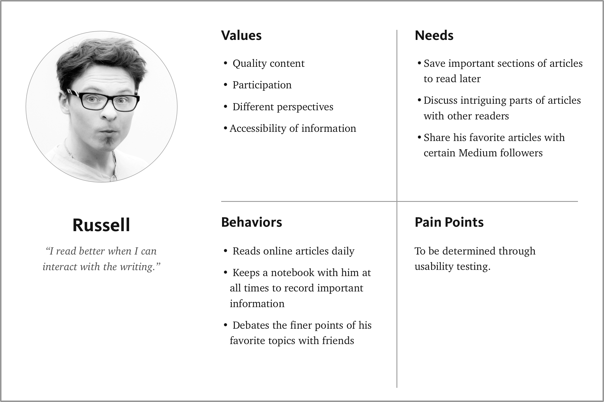
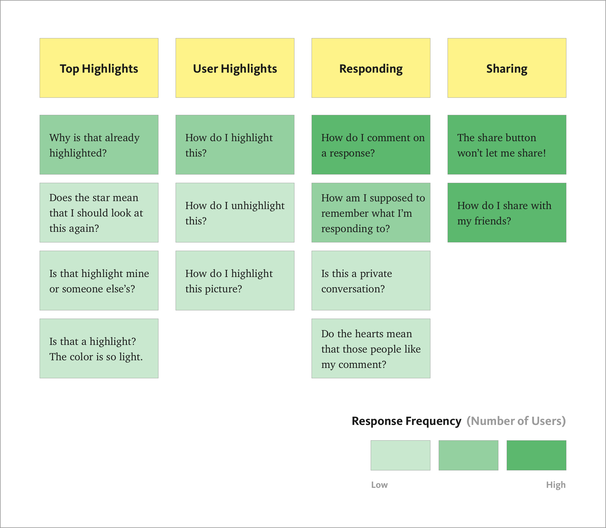
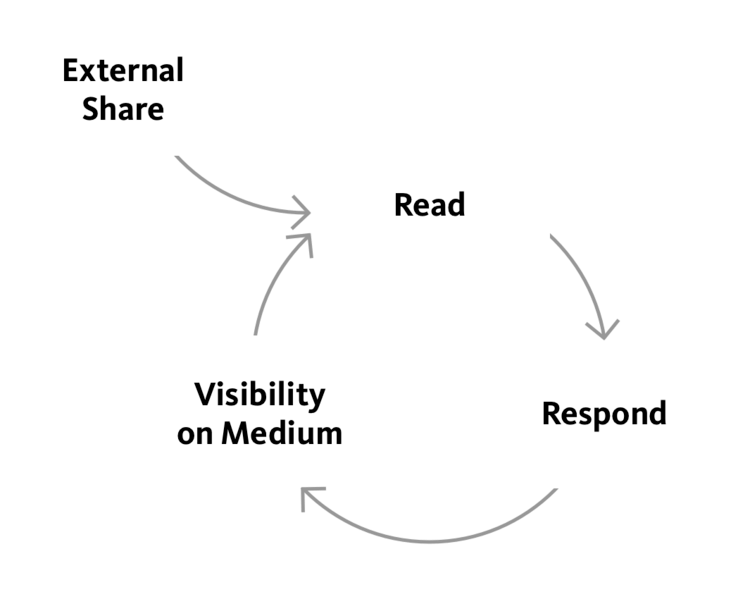
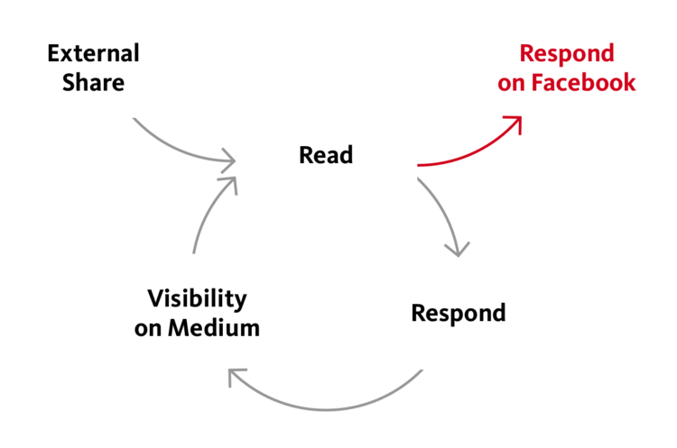
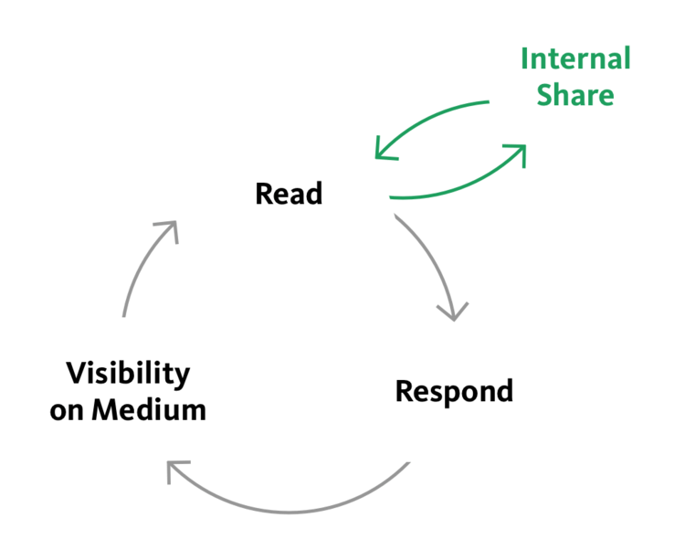

Medium is one of my favorite platforms on which to read and write. I use it to learn from my peers, save and share inspiring content, and document my design work.
Over a couple of days, I set out to discover if Medium could be even better by doing usability tests on one of the platform’s core functionality.
Challenge: The Medium community actively engages with articles, but can only share on external platforms. How can users’ experience interacting with stories be increased, while increasing Medium’s total time reading metric?
Solution: Create an in-app sharing workflow for users to recommend articles to their friends and followers. Medium users can now further their engagement within the platform.
Platform: iOS
Time: 3 days
Reading on Medium is not a passive experience. Its users actively engage with articles by highlighting and responding, all of which is shared with the community in an always-evolving conversation.
While some of Medium’s users want to write and others want to read, the core activity that connects all users is reading.
Some websites measure their success by page views. Others look at daily active users. At Medium, Total Time Reading, or TTR, is the most important metric.
Given this, the scope of the usability test will focus on user engagement while reading articles.
If a solution could increase user engagement, TTR should increase as well.
While I do not have access to the demographic information of Medium’s primary users, I was able to learn about their values, behaviors and needs.
I portrayed this information by creating Russell, a persona that represents Medium’s generalized users. This will help me empathize with the users to identify their pain points and find a meaningful solution.
Based on Russell’s behaviors and needs, I came up with some questions to gauge his experience using the app:
Test participants were asked to embody Russell’s persona as they attempted the following tasks:
I ordered the user feedback into distinct categories and then sorted by response frequency.
While users didn’t initially think to tap on a response to make the comment bubble appear, they often figured it out after trying out different ways of responding.
The most intriguing, and arguably more meaningful, observation was that users were particularly surprised when they couldn’t find a way to directly share articles with their friends and followers on Medium.
They enjoyed the functionality of discussing articles with other readers who had already commented, but were frustrated that they couldn’t reach out to other people who weren’t already involved in the discussion.
As a workaround, users tapped the share button and used texting and Facebook to share, but the experience felt disjointed.
Because of this, I decided to focus the scope of the solution on creating a way for users to share internally.
What I set out to understand:
Why does Medium have external sharing capabilities, but no option to share internally?
I focused on how users currently share externally to learn about their motivations and determine why Medium would present the option in the first place.
On Medium’s desktop site, there are Facebook and Twitter sharing links on the static bottom bar. These links share the same real estate as recommending, responding and bookmarking — the core reading engagement features of the platform.
Two questions came to mind here:
Note: It makes sense that the links are buried in the share menu since there is much less bottom bar real estate on the app than on desktop. This is also a standard iOS sharing convention.
By observation, Medium places importance on external sharing, at least on desktop. But why, if Medium is not a social network?
The answer can be found on Medium’s vision statement.
Ev Williams, founder of Medium, writes:
More than a network of thinkers, though, Medium is a network of thought. Connecting people together increases their knowledge and capabilities. Connecting ideas together increases their value, as well.
While Medium’s identity and value come from ideas more than the thinkers who write them, the two are inherently linked.
The more people read and respond to articles, the more their diversity of opinion advances the conversation — a positive feedback loop of engagement.
This is a core value of external sharing.
By sharing externally, people who are not currently visiting Medium will be drawn to the site, beginning the feedback loop.
The question then becomes:
What is the incentive for users to engage with articles on Medium instead of remaining on the social media platform where the article link was shared?
Engagement is one of the main uses of social media as well. If users found a Medium article on Facebook, the assumption is that they are more committed to Facebook as a platform of discussion than Medium (at least at the moment).
The result is that the user is more likely to start an engagement cycle on Facebook. This increases page views on Medium, but the sharing of viewpoints remains on Facebook.
So how could this cycle of engagement be brought back to Medium, evolving the original idea and also increasing TTR?
The main problem to address:
How can users share articles within Medium in a way that stays true to the platform’s identity as a network of thought and not a social network?
The assumption is that people using the Medium app are dedicated users and are committed enough to the platform that they would want to read, engage with and share articles internally.
Internal sharing would then be similar to receiving article recommendations from Medium, which shortens and strengthens the positive feedback loop of engagement. How could this functionality be seamlessly incorporated for users?
The solution I came up with is a way for users to invite other users to read and discuss articles within the Medium app. Invites will be received in the notifications tab.
By default, users would only share with other users who follow them, unless the intended recipient has enabled sharing invites from everyone in their settings. This maintains the default privacy settings that other types of notifications have.
I would propose users don’t have the option to add comments or descriptions to the notification when internally sharing on Medium for two reasons:
Here’s a prototype made in Flinto to see how the preliminary interaction could work:
Here are some other ideas for internal sharing:
Adding internal sharing to Medium could potentially keep the feedback loop of user engagement more within the platform. This would strengthen the community and advance Medium’s network of thought, making the already positive user experience of sharing content even better.